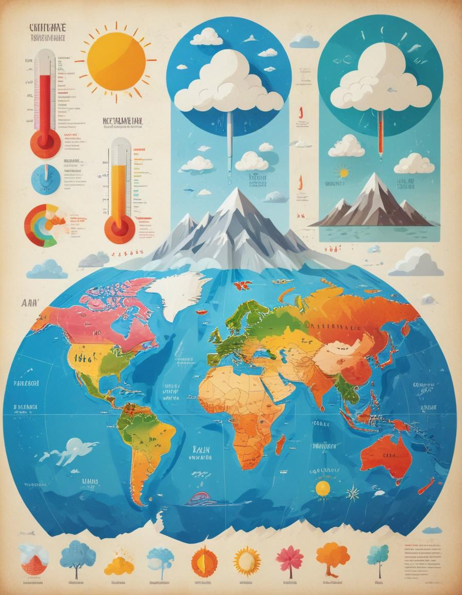

Rutas por Tema

Nuestro Planeta
- La Tierra vista desde fuera
- La Tierra por dentro
- Los movimientos de la Tierra
- Los eclipses
- Los continentes
- Los océanos

Cartografía
- La ubicación natural
- Los husos horarios
- Los mapas
- Las escalas

Relieve
- Los procesos endógenos
- Los procesos exógenos
- Las formas del relieve
- Las formas del relieve
costero y fluvial

El clima de la Tierra
- El tiempo meteorológico y el clima
- Los elementos del clima
- Las zonas climáticas
- Los pisos térmicos

¿Que es la Geografia?
- Ciencia de la Tierra
- Funciones de la geografía
- ¿Qué hace un geógrafo?
- Aplicaciones de la geografía